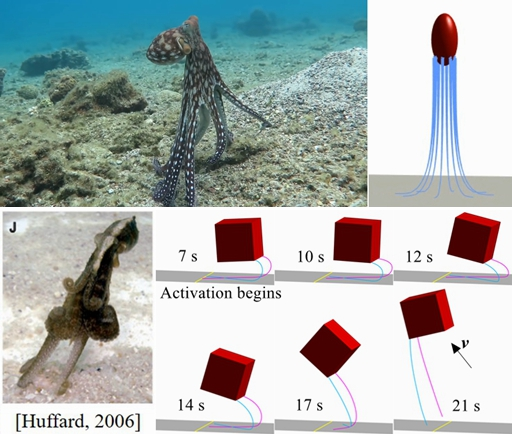

Soft robot for asteroid exploration
Tens of thousands of asteroids are flying beside our Earth with little understanding. Major challenges of surface investigation on these bodies include landing uncertainties and mobility limitations, which soft robots may suitably aid. In this paper, we invite a discussion of designating future soft robots towards the asteroid surface.
○ Astronomical knowledge of asteroids, and potential soft robotic solutions are reviewed and analyzed.
○ A morphable, stiffness-variable hopper is proposed and developed, which applys a shape memory polymer shell.
○ Dynamic simulations identify the contribution of the soft, deployed shell to reduce
landing uncertainties.
Magnetic worm-like soft robot
In this work, a biomimetic magnet embedded worm-like robot in the size of centimeter level is designed and investigated.The robot represents compact and low-cost solutions that use permanent magnets for remote actuation.
○ Dynamic model is established and verified, coupling the discrete elastic rod model with magnetic actuation.
○ Simulations reveal that the novel driving mechanism of the robot doesn't rely on the horizontal magnetic drag.
○ Robot prototypes are developed and tested, which show the fast crawling and underwater crawling ability.
Stable landing of a flexible asteroid lander
This work is currently under minor revision from the journal Aerospace Science and Technology.
Analysis of single actuator wave-like robot
We studied a kind of single actuator wave-like robot (SAW), which has subtle structural design with links and only one motor. SAW has been proved to be competent in complex environments, and potential for miniaturization. In order to better understand its mechanism, we carry out kinetic and dynamic analyses.
○ Kinetic model of SAW is developed recursively, and the motion equation is theoretically derived through Kane's method.
○ Motion simulations are also carried out using ADAMS.Robot prototypes are developed. The theoretical models are variefied.
○ Inverse dynamic analysis reveals key design parameters to reduce the cost of transport.
Capture asteroids using large-scale net
To cope with the numerous asteroids, capturing them with large-scale net is one promising way of scientific investigation, impact defense, and resources exploitation. We study the application gaps of this capture proposal, through a conceptual net spacecraft.
○ The capture dynamics are developed, considering the detailed asteroid terrain, irregular gravity, and the net deflection, etc.
○ Sliding mode control is applied to design the controllers for the net enveloping procedure.
○ Engineering criteria are established to determine successful asteroid capture, and the case shows effectiveness and robustness.

Hopping mechanism inspired by octopuses
We take biomimetic inspiration from the reaching movement of the octopuses, and study the hopping motion applying this movement.This work has been accepted by the 2022 ROBIO Conference.
○ Deformation and actuation for the soft legs are modeled, and the actuation mechanism of the reaching movement is studied.
○ The actuation mechansim can help reduce the control variables for the soft legs.
○ Nontrivial hopping behaviors can be achieved, such as the less rotational and multi-directional motion capabilities.